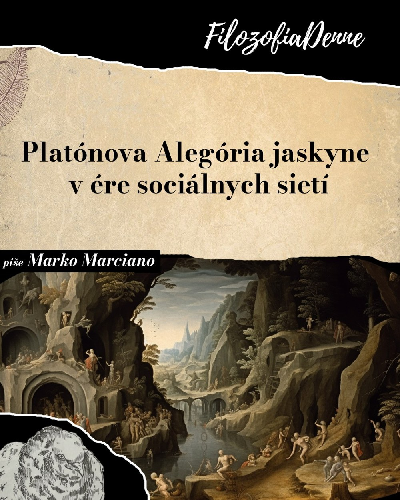
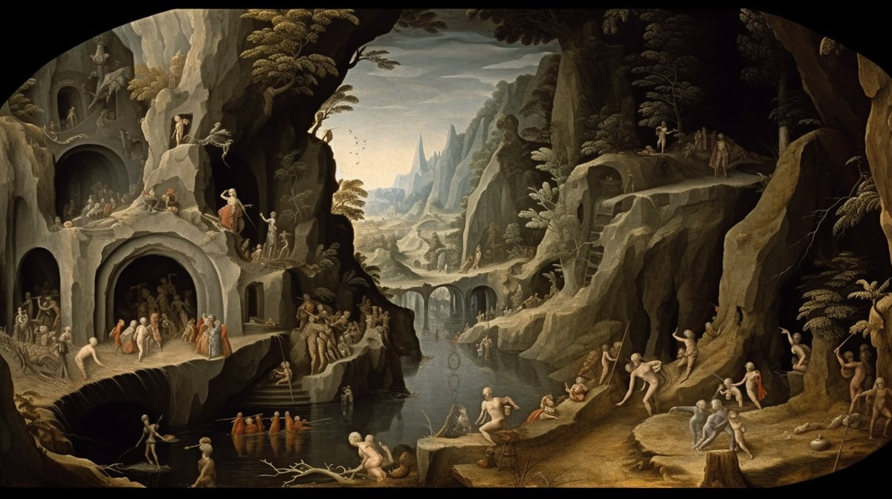
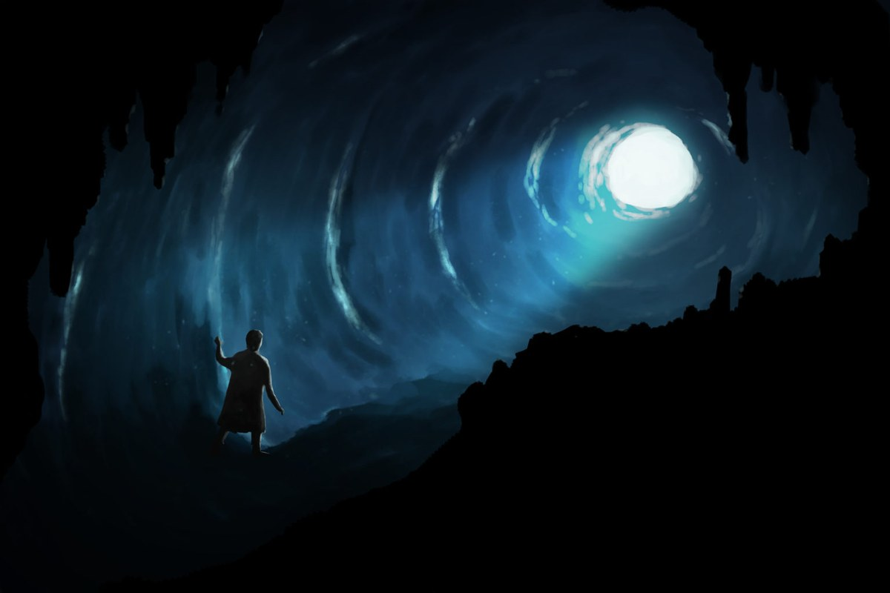
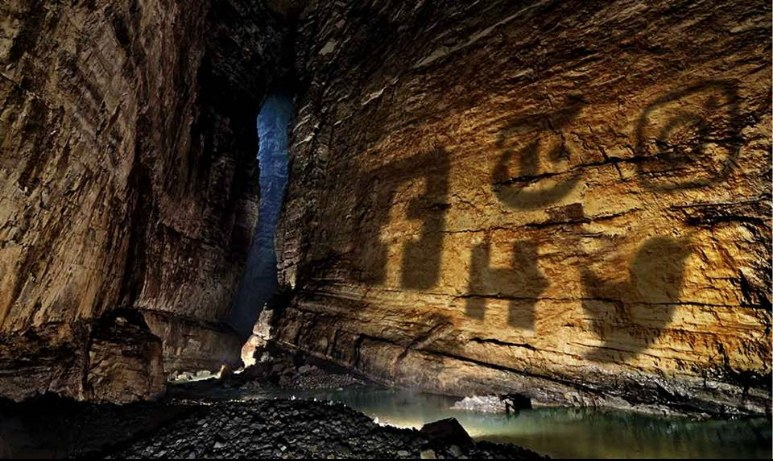

Platónova alegória jaskyne v ére sociálnych sietí
Pýtam sa, či nás Platónova alegória jaskyne už 2 400 rokov nevaruje pred tým, čo dnes predstavujú sociálne siete.

Alegória jaskyne je sokratovský argument, ktorý zaznamenal grécky filozof Platón, Sokratov žiak a autor dialógu Ústava (Politeia, približne 375 pred n. l.). Objavuje sa v rozhovore medzi Sokratom a Platónovým bratom Glaukónom. Ide o metaforický príbeh, v ktorom sú väzni pripútaní v jaskyni tvárou k stene. Za ich chrbtom horí oheň, takže na stene vidia tiene ľudí a predmetov prechádzajúcich za nimi. Tieto tiene sú jedinou skutočnosťou, ktorú poznajú, až kým sa jednému z väzňov nepodarí uniknúť do vonkajšieho sveta.

Sokrates tvrdí, že oslobodený väzeň by sa neskôr vrátil, aby vyslobodil aj ostatných, pretože už pozná svet mimo jaskyne a uvedomuje si, ako veľmi je ich predstava reality skreslená. Na konci dialógu sa však Sokrates aj Glaukón zhodujú, že ostatní väzni by sa s najväčšou pravdepodobnosťou pokúsili každého osloboditeľa zabiť. Nechceli by totiž opustiť bezpečie a istotu sveta, ktorý dôverne poznajú.
V mnohých ohľadoch možno sociálne siete chápať ako modernú podobu Platónovej jaskyne. Denne sme vystavení nepretržitému prúdu informácií, názorov a obrazov, ktoré starostlivo vyberajú algoritmy a sprostredkúvajú nám ich prostredníctvom obrazoviek. Podobne ako väzni v jaskyni sa aj my môžeme uzavrieť do obmedzenej perspektívy a začať považovať to, čo sa nám zobrazuje, za samotnú realitu. Tiene na stene tak možno prirovnať k dezinformáciám, konšpiračným teóriám či propagande, ktoré sa prostredníctvom sociálnych sietí šíria mimoriadne rýchlo.

Spôsob, akým dnes vnímame a interpretujeme skutočnosť, sa výrazne zmenil. Internet síce sprístupnil bezprecedentné množstvo poznatkov, no práve sociálne siete sa stali hlavným kanálom ich šírenia. Pre mnohých ľudí predstavujú najdôležitejší zdroj informácií. Zostáva však otvorená otázka, či je v ére sociálnych sietí ešte vôbec možné spoľahlivo rozlíšiť, čo je skutočné.
Sociálne siete sa postupne stávajú akýmsi druhým svetom a zároveň svetom potenciálne nebezpečným. Ľudia si na nich vytvárajú online identitu, ktorá môže fungovať ako druhé ja. V tomto zmysle je Platónova alegória prekvapivo aktuálna. V oboch prípadoch existujú dva svety. Prvý je vytvorený a umelý, no pre tých, ktorí v ňom žijú, predstavuje jedinú známu realitu. Druhý je svet, ktorý pokladáme za skutočný a z ktorého možno rozpoznať neautentickosť toho prvého.
Pri čítaní Platónovej alegórie cítime úzkosť väzňov uväznených v jaskyni. Som presvedčený, že určitú podobu takejto jaskyne už vytvorili sociálne siete. Tak ako väzni považovali tiene na stene za skutočnosť, aj používatelia sociálnych sietí často prezentujú starostlivo upravený obraz svojho života, ktorý vytvára ilúziu autenticity. Takéto prostredie môže viesť k deformovanému obrazu reality a postupnému odcudzeniu od skutočného sveta. Sociálne siete navyše neurčujú iba to, čo vidíme, ale výrazne ovplyvňujú aj spôsob, akým si vytvárame názory. Tým môžu predstavovať riziko pre demokraciu, udržateľný rozvoj, slobodu aj bezpečnosť.
Alegória jaskyne zároveň dobre ilustruje jav známy ako konfirmačné skreslenie. Väzni poznajú iba jedinú perspektívu a nemajú prístup k ničomu mimo tieňov na stene. Podobne aj sociálne siete vytvárajú prostredie informačných bublín, v ktorom používatelia dostávajú najmä obsah potvrdzujúci ich existujúce názory. Výsledkom je obmedzený kontakt s odlišnými stanoviskami a ďalšie upevňovanie vlastných presvedčení.
Závažným problémom sa stala aj závislosť od sociálnych sietí. Mnohí používatelia sú natoľko naviazaní na lajky, zdieľania a neustálu online interakciu, že sa len ťažko dokážu od svojich zariadení odpútať. Platónovi väzni sú podobne neschopní oslobodiť sa zo svojich reťazí a zostávajú pripútaní k ilúziám, ktoré považujú za jedinú realitu.

V alegórii sú väzni pod kontrolou vonkajších síl, ktoré rozhodujú o tom, aké tiene sa objavia na stene a aké zvuky ich budú sprevádzať. Podobne aj obsah sociálnych sietí formujú algoritmy, reklamné spoločnosti či politické skupiny, ktoré významne ovplyvňujú, akým informáciám sú používatelia vystavení a ako následne interpretujú svet okolo seba. Ako upozorňuje Eli Pariser, autor knihy The Filter Bubble (2011): „Vo svete, v ktorom algoritmy rozhodujúce o tom, čo uvidíme, fungujú prevažne netransparentne, musíme veľmi pozorne sledovať, aký obsah sa nám predkladá.“
Platónova alegória jaskyne tak ponúka presvedčivú analógiu aj varovanie pred rizikami sociálnych sietí. Ukazuje, že môžu deformovať naše chápanie skutočnosti, posilňovať existujúce predsudky, vystavovať nás manipulácii zo strany vonkajších aktérov, podporovať závislosť a oslabovať kontakt so skutočným svetom. Hoci sociálne siete predstavujú mimoriadne účinný prostriedok komunikácie a prepájania ľudí, je dôležité uvedomovať si ich hranice aj ich schopnosť ovplyvňovať naše vnímanie. Ak budeme schopní pozerať sa na veci v širších súvislostiach a zohľadníme poučenia, ktoré ponúka Platónova alegória jaskyne, môžeme sa lepšie orientovať v zložitom prostredí digitálneho sveta a priblížiť sa informovanejšiemu a hlbšiemu porozumeniu skutočnosti.